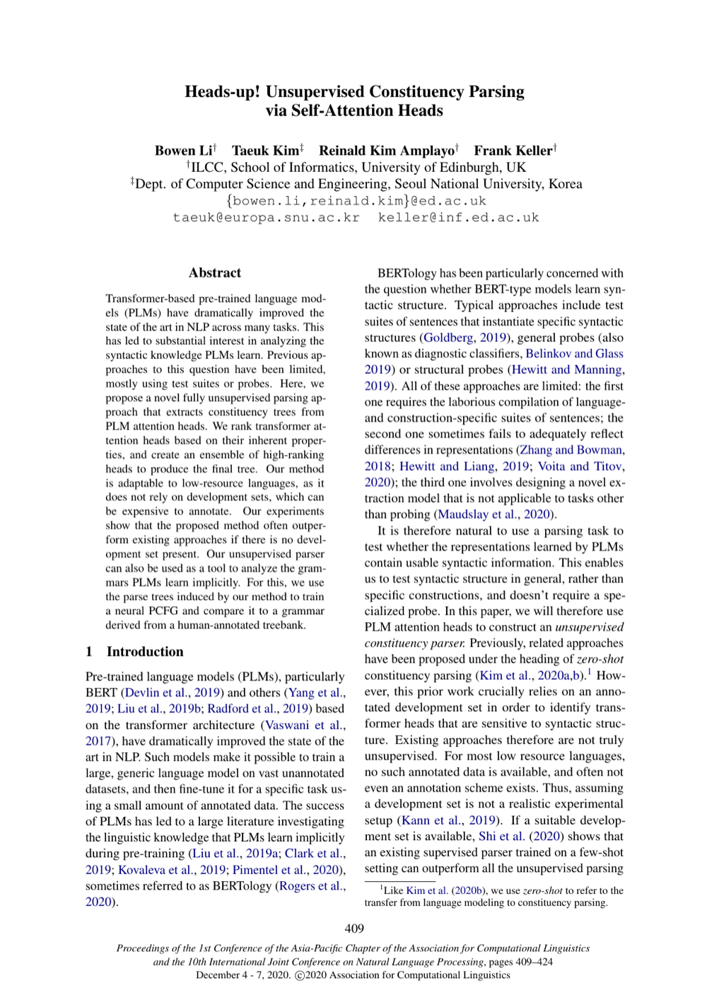

Heads-up! Unsupervised Constituency Parsing via Self-Attention Heads
AACL-IJCNLP 2020
Bowen Li, Taeuk Kim, Reinald Kim Amplayo, Frank Keller
One-Line Summary
Unsupervised constituency parsing using self-attention heads

Figure 1. Unsupervised constituency parsing via self-attention heads. The approach extracts syntactic structure by analyzing attention patterns in pre-trained transformers.
Key Points
Performs unsupervised constituency parsing by leveraging syntactic structure information implicitly learned in transformer self-attention heads
Demonstrates that meaningful parse trees can be extracted from attention patterns alone without labeled data